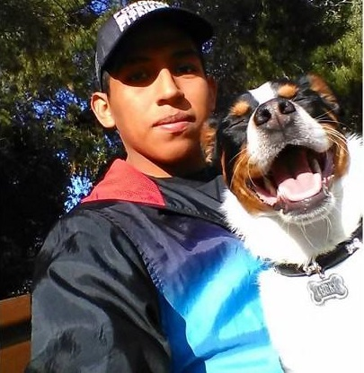

Researcher in Perception & Aesthetics
Email | Google Scholar | ORCID | ResearchGate | Website
Short description about your research interests, affiliation, and what you work on.
Describe your research projects, labs, collaborations, and main topics.
List your degrees, institutions, and years.
Optional: link to blog posts, conference notes, or other content.